Notebook Assets
Dataset: Food-101 (20 Classes)
Base Model: OpenAI CLIP
Tasks: Zero-Shot vs Few-Shot
Assignment 1 / Multimodal
Interactive summary extracted from multimodal_classification.ipynb. This page outlines the comparison between Zero-Shot prediction and Few-Shot fine-tuning using OpenAI's CLIP on the Food-101 dataset.
The notebook showcases the incredible power of Vision-Language models like CLIP. Without a single gradient update on the subset, the Zero-Shot baseline using a generic prompt achieved over 91% accuracy. Both Linear Probes and MLPs applied over frozen features improved performance consistently up to 94% on 16 shots.
However, the most significant discovery was that simply tuning the text prompt mapping—from "a photo of {class}" to "a delicious {class}"—yielded an astounding 96.22% Zero-Shot accuracy. This implies that careful prompt engineering alone can surpass the performance of explicit few-shot fine-tuning on downstream heads.
The diagram below illustrates how CLIP performs multimodal classification: food images and text prompts are independently encoded into a shared 512-dimensional space, then compared via cosine similarity to produce a prediction.
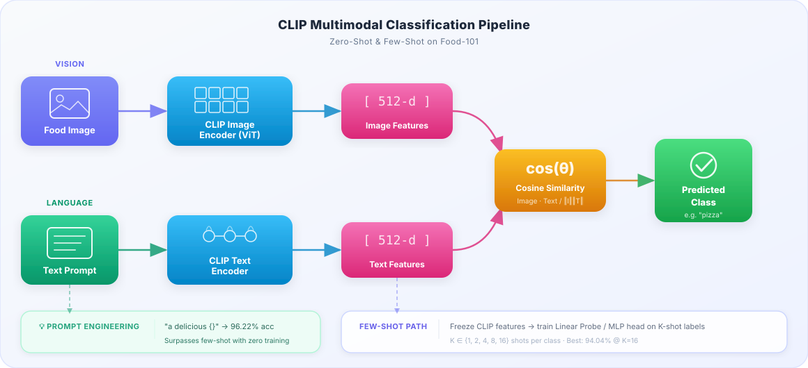
Target Classes
20 (Subset)
Base Zero-Shot
91.44%
Best Few-Shot (K=16)
94.04%
Best Prompt Result
96.22%
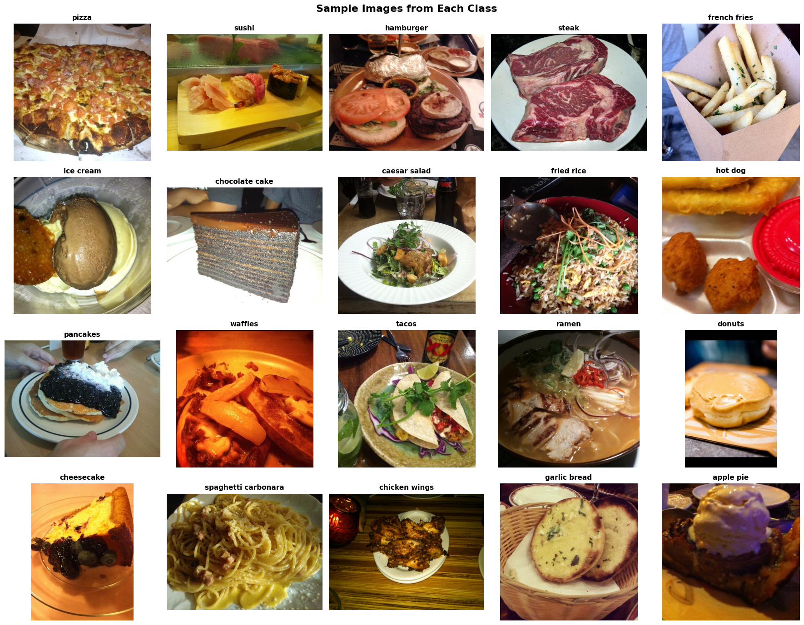
The Food-101 subset consists of 20 challenging categories. The random sample grid shows that the dataset contains a wide variety of food textures, lighting conditions, and plating styles — from close-up sushi to overhead pizza shots.
Because CLIP is a zero-shot model that relies on natural language, visual characteristics like plates or zoom-levels don't degrade performance as severely as they do for models trained from scratch on small datasets.
CLIP's vision-language alignment means it can generalize across visual styles that would confuse a traditional CNN — making it ideal for food classification where plating varies wildly.
The Food-101 subset is remarkably balanced, with each of the 20 classes containing approximately 750 training samples and 250 test samples. This balance ensures that accuracy alone is a meaningful metric (though we also report weighted F1 for completeness).
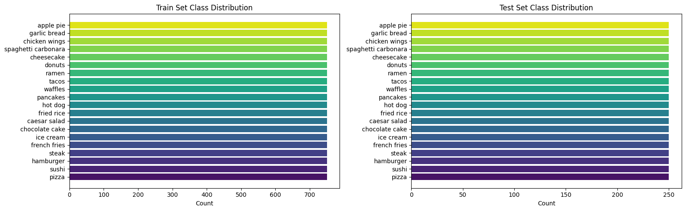
Horizontal bar chart showing near-uniform class distribution across both train and test splits.
Without any training data, CLIP achieves 91.44% accuracy and 89.67% weighted F1 using the default prompt template. This establishes a strong baseline that few-shot methods must outperform to justify the additional complexity.
Zero-Shot Accuracy: 0.9144
Zero-Shot Weighted F1: 0.8967
Prompt template: "a photo of {class_name}"A 91%+ zero-shot baseline is remarkable – it shows that CLIP has already learned strong food representations during its web-scale contrastive pretraining.
The confusion matrix reveals that most classes are cleanly separated. The main confusion hotspot is waffles ↔ apple pie (49 misclassifications), likely because both visually feature golden-brown baked surfaces.
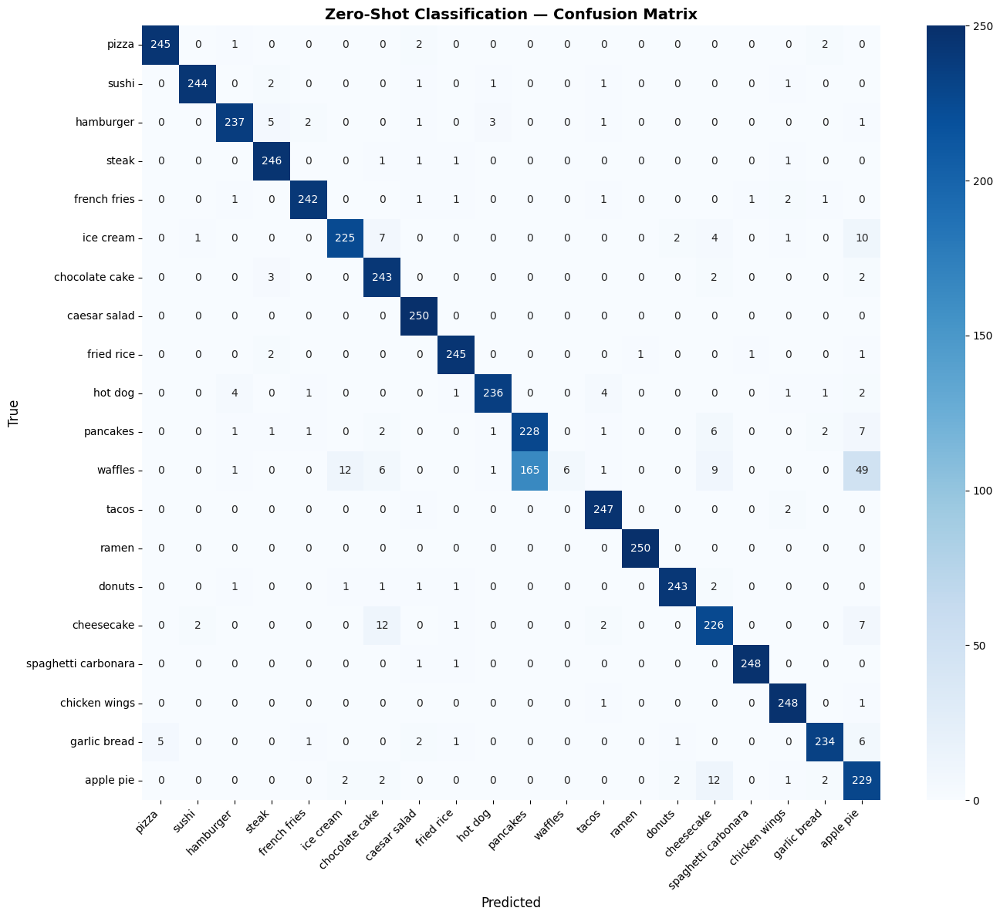
Confusion matrix for zero-shot CLIP classification. Diagonal dominance confirms strong performance across all 20 classes.
By extracting the 512-dimensional CLIP embedding, we trained simple classification heads on very limited data (from 1 shot up to 16 shots per class). Both methods scale cleanly, with the linear probe offering exceptional simplicity.
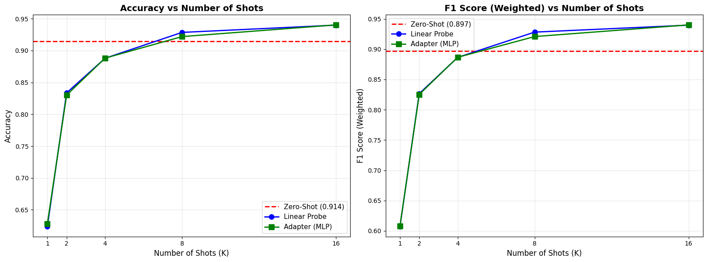
Accuracy and F1 scaling from K=1 to K=16 shots. The dashed red line marks the zero-shot baseline. Both adapters and linear probes scale cleanly with more data.
| Method | K (Shots/Class) | Accuracy | Weighted F1 |
|---|---|---|---|
| Linear Probe | 1 | 0.6238 | 0.6072 |
| Linear Probe | 2 | 0.8336 | 0.8266 |
| Linear Probe | 4 | 0.8880 | 0.8864 |
| Linear Probe | 8 | 0.9286 | 0.9282 |
| Linear Probe | 16 | 0.9400 | 0.9397 |
| Adapter (MLP) | 1 | 0.6282 | 0.6081 |
| Adapter (MLP) | 16 | 0.9404 | 0.9401 |
At K=16, both methods converge to ~94% accuracy — only marginal gains over the zero-shot baseline. This suggests CLIP's pretrained features are already highly discriminative for this food domain.
Side-by-side confusion matrices reveal how few-shot training redistributes errors. The linear probe resolves most waffles/apple_pie confusion but introduces minor new confusions in other classes.
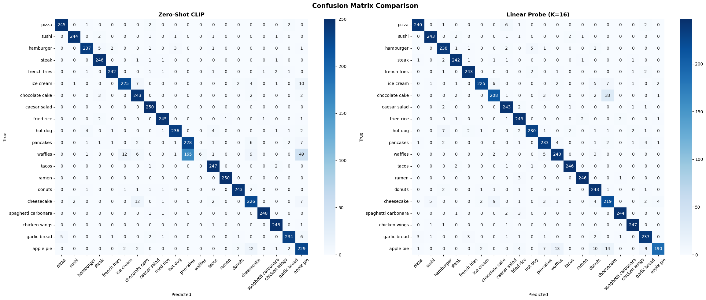
Left: Zero-Shot CLIP. Right: Linear Probe (K=16). Both show strong diagonals; the fine-tuned head resolves the waffles ambiguity.
The grouped bar chart below compares per-class accuracy between the zero-shot baseline and the best few-shot model. Most classes perform above 90% for both approaches. The notable exception is waffles, where zero-shot performs poorly (~3%) due to confusion with apple pie, but the linear probe recovers well.
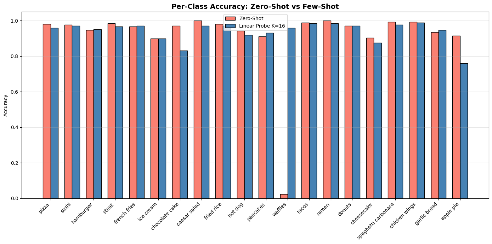
Grouped bar chart showing per-class accuracy for both methods. The waffles class shows the most dramatic improvement with few-shot training.
The waffles class is a fascinating failure mode: zero-shot CLIP confuses waffles with apple pie (both are golden-brown baked items). With just 16 labeled examples, the linear probe learns to distinguish them.
By extracting the attention maps from the final Transformer block of the CLIP image encoder, we can see how the model "looks" at food. The visualization proves that the model successfully attends to the semantic food regions rather than background plates or noise.
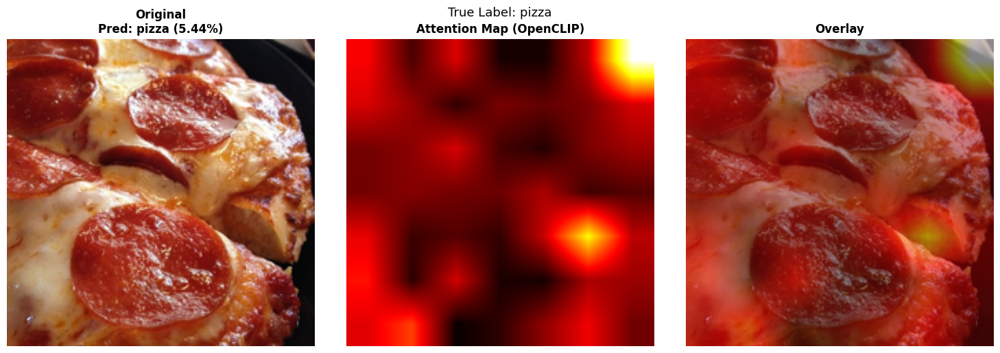
Original → Attention Map → Overlay. The model focuses on pizza toppings and crust.
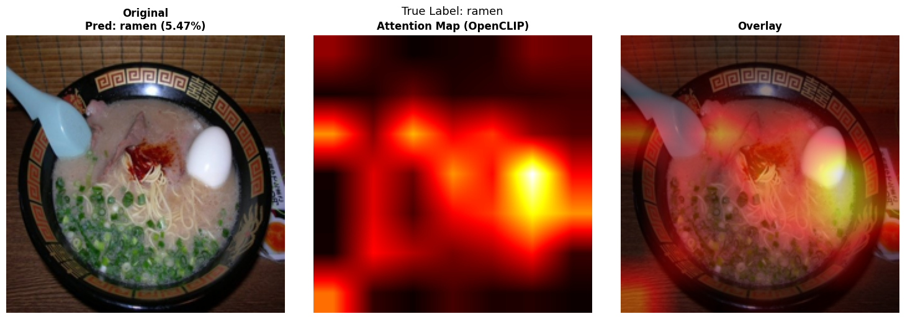
Original → Attention Map → Overlay. Attention concentrates on noodles and broth.
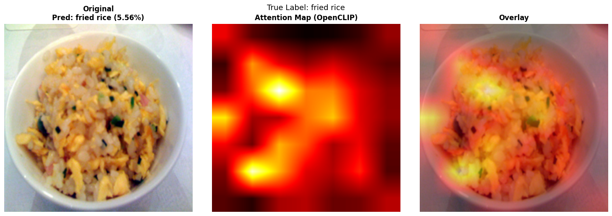
Original → Attention Map → Overlay. Highlights the rice grains and mixed ingredients.
Across all three examples, CLIP's attention maps confirm it localizes food without any bounding box supervision. This spatial awareness is a byproduct of the contrastive pretraining and validates the model's interpretability.
Examining misclassified samples reveals understandable errors: hamburgers confused with steaks (both are meat dishes), hamburgers confused with hot dogs (both are served on buns), and some ambiguous plating styles.
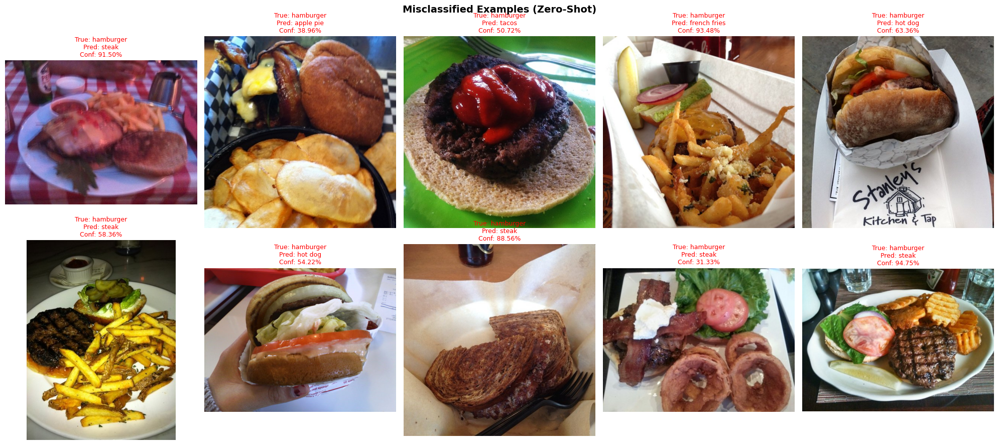
A gallery of zero-shot misclassifications for the hamburger class. Red labels indicate true class and model predictions. Most confusions are semantically plausible (steak, hot dog, french fries — all co-occur in burger meals).
These "mistakes" are actually quite reasonable — they reflect genuine visual ambiguity. A meal featuring a burger, fries, and steak on one plate will challenge even human classifiers when cropped at certain angles.
Instead of training a model with additional data, we can guide CLIP's text encoder by providing more contextual templates. Below are the zero-shot accuracy iterations, visualized as both a bar chart and scaled bars:
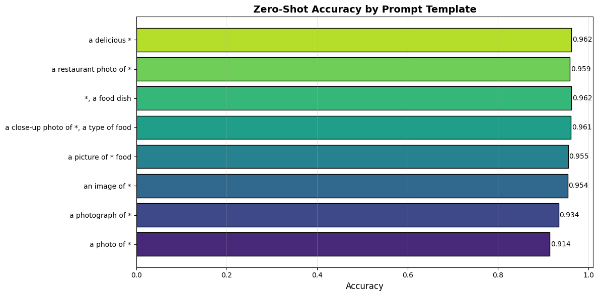
Horizontal bar chart from the notebook showing zero-shot accuracy by prompt template. "a delicious {}" achieves the highest score.
Template: 'a photo of {}' → Accuracy: 0.9144, F1: 0.8967
Template: 'a photograph of {}' → Accuracy: 0.9338, F1: 0.9291
Template: 'an image of {}' → Accuracy: 0.9536, F1: 0.9533
Template: 'a picture of {} food' → Accuracy: 0.9550, F1: 0.9549
Template: 'a close-up photo of {}, a type of food' → Accuracy: 0.9608, F1: 0.9606
Template: '{}, a food dish' → Accuracy: 0.9618, F1: 0.9617
Template: 'a restaurant photo of {}' → Accuracy: 0.9588, F1: 0.9587
Template: 'a delicious {}' → Accuracy: 0.9622, F1: 0.9621A simple linguistic shift — from "a photo of {}" to "a delicious {}" — yields a +4.78 percentage point improvement, surpassing even the best few-shot model (94.04%). This demonstrates that prompt engineering is one of the most cost-effective strategies for improving vision-language model performance.
Approach
Zero-Shot CLIP
Best Acc.
96.22%
Strategy
Prompt Tuning
Training Cost
$0